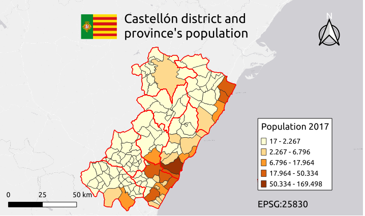
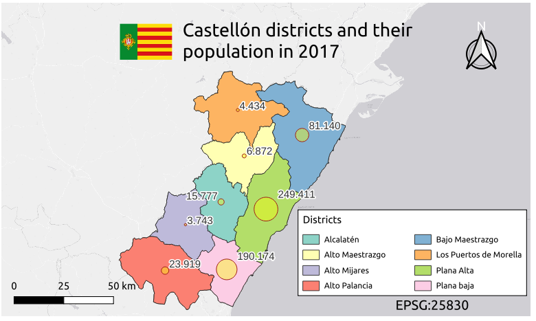
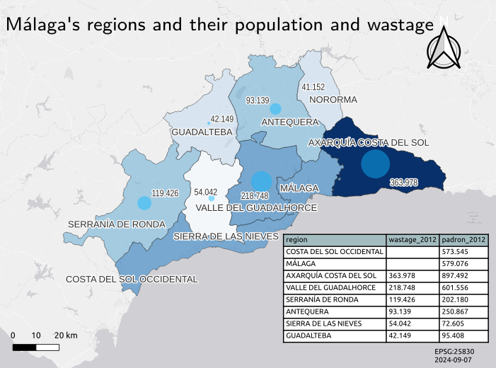

CREATE TABLE join_castellon_comarca_pop AS
SELECT
m."CODIGO_INE",
m."ETIQUETA" as poblacion,
c."Comarca" as comarca,
p."2017_1" as pop_2017,
m.geom as geom,
st_centroid(m.geom) as pt_geom
FROM
municipios AS m
LEFT JOIN
comarcas_castellon AS c ON c."CODIGO_INE" = m."CODIGO_INE"::integer
LEFT JOIN
poblacion_castellon AS p ON p."INE" = m."CODIGO_INE"::integer;Joining and dissolving in PostgreSQL: Castellon’s districts
Transform
PostGIS-QGIS
TYC GIS-IMFE
Exercise 2: JOINS
Exercise 2
Complete the information from the MUNICIPIOS.shp layer with the information contained in the tables COMARAS_CASTELLON and POBLACION_CASTELLON. Represent the regions from the province of Castellon and the population grouped in 5 categories according to the natural Jenk breaks.
Layers to use:
- MUNICIPIOS.shp (municipalities)
- COMARCAS_CASTELLON (regions)
- POBLACION_CASTELLON (population)
PostGIS is the CLI approach, while QGIS is the GUI approach.
PostGIs
Joins: Adding regions data using joins
Groupping: Summarising data by regions
CREATE TABLE castellon_comarcas_pop_2017 AS
SELECT
st_union(a.geom) as geom,
st_centroid(st_union(a.geom)) as pt_geom,
sum(pop_2017) as pop_comarca,
comarca
FROM join_castellon_comarca_pop AS a
GROUP BY comarca;QGIS
Joining data to the municipalities from regions
Uniting the municipalities geometry by regions
Results
Municipalities choropleth map

Region choropleth map

Region proportional map

For IMFE
The provinces, NUTS 3, are obtained from Malaga Province Geoportal. Instead of the population, the amount of solid waste is chosen. As I was taught during my studies as laboratory technician, in the context of microbiology the population is determined by the amount of waste that is produced. Probably this is not applicable to a human urban context, since there may be influenced from other factors such as industries or other socioeconomic variables. The amount of waste is obtained through the Open Data Portal from Málaga
These are the layers:
- sitmap_municipios_view.shp (municipalities)
- sitmap_comarcas.shp (regions)
- resumen-anual-de-datos-residuos_v2.csv (waste)
Joins: Adding district data using joins
CREATE TABLE join_agp_comarca_waste AS
SELECT
m."codigo",
m.nombre as municipality,
m.padron as population,
c.nombre as region,
c.codigo as region_cod,
w."RSU Toneladas Año" as waste_2012,
m.geom as geom,
st_centroid(m.geom) as pt_geom
FROM
agp_municipalities AS m
LEFT JOIN
agp_comarcas AS c ON m.cod_comarc = c.codigo
LEFT JOIN
agp_waste AS w ON w."ID_Municipio"::integer = m."codigo"::integer;Groupping: Summarising data
CREATE TABLE agp_comarcas_waste_2012 AS
SELECT
region,
st_union(geom) as geom,
st_centroid(st_union(geom)) as pt_geom,
SUM(waste_2012::float) AS waste_2012,
SUM(population::float) AS padron_2012,
region_cod::integer
FROM join_agp_comarca_waste
GROUP BY region_cod, region;Results
Proportional map & Choropleth
There is a positive correlation between the wastage and the population. As waste increases, there is an increase in population. In fact, sorting the data by the waste or the population returned the same relative position, except for Sierra de las Nieves and Guadalteba.
An anomaly is the lack of data for two of the most populated regions, Málaga (the city center) and the “Costa del sol Occidental (the most touristic area) with known municipalities such as Marbella or Fuengirola. An unexpected finding was Axarquía as the region with most population, this could be explained by the misinterpretation of”padron” as population.
Overall, the wastage was a good proxy of population in relative terms.
